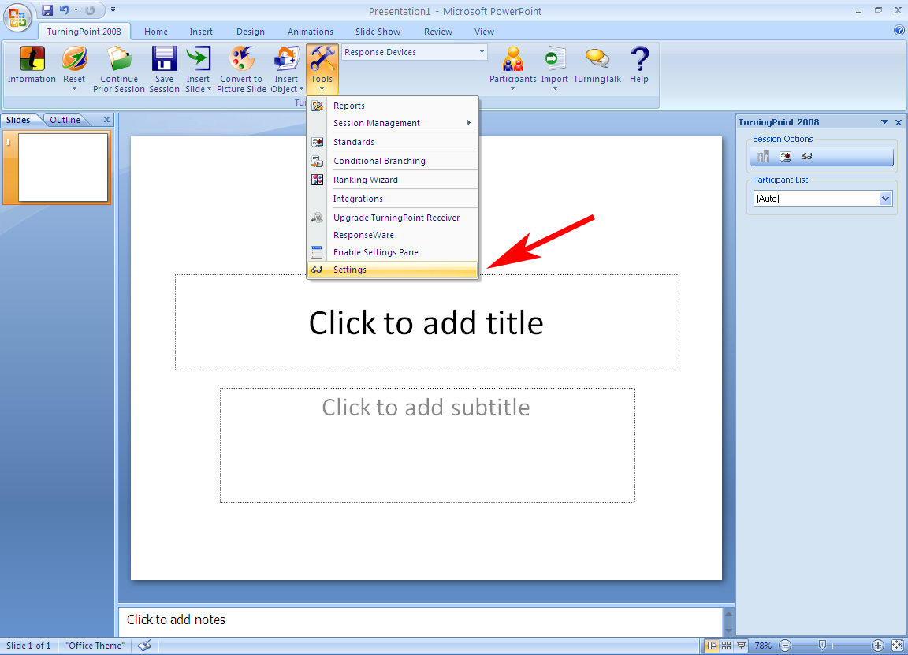
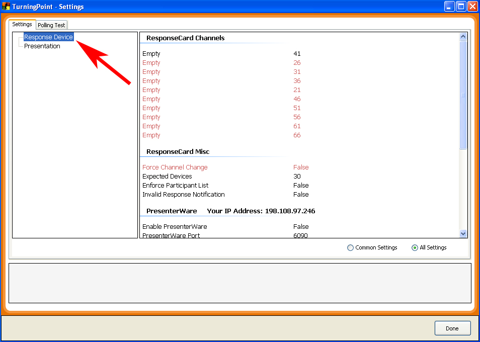
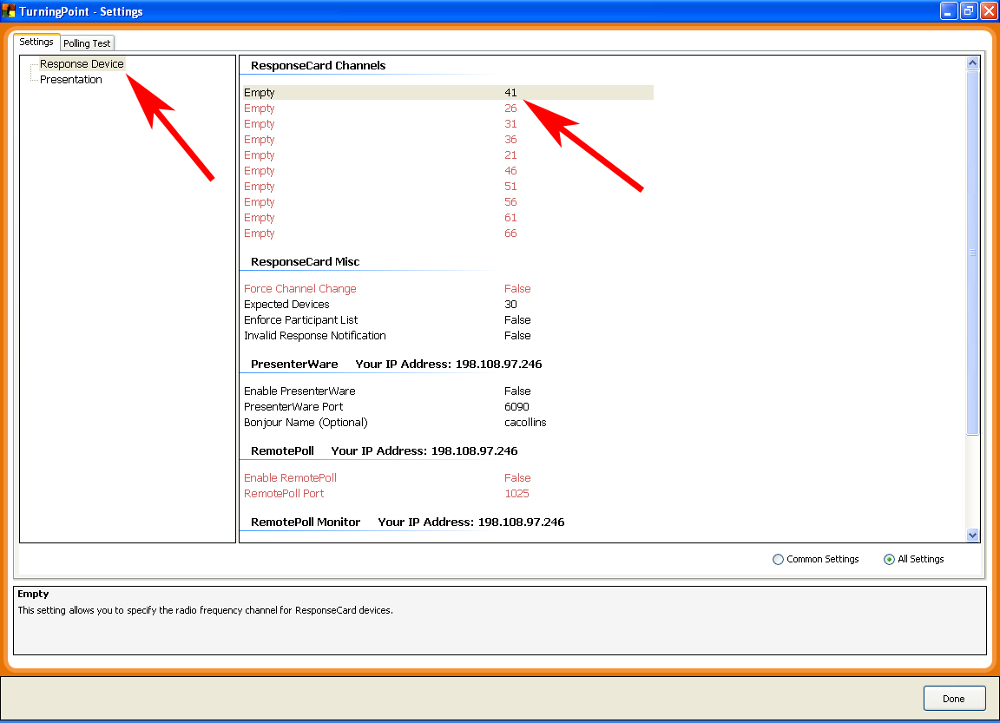
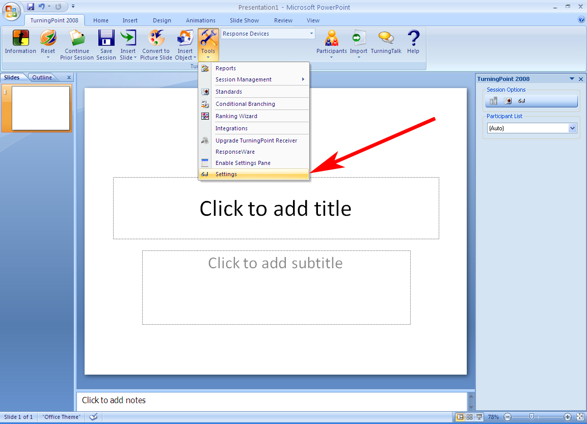
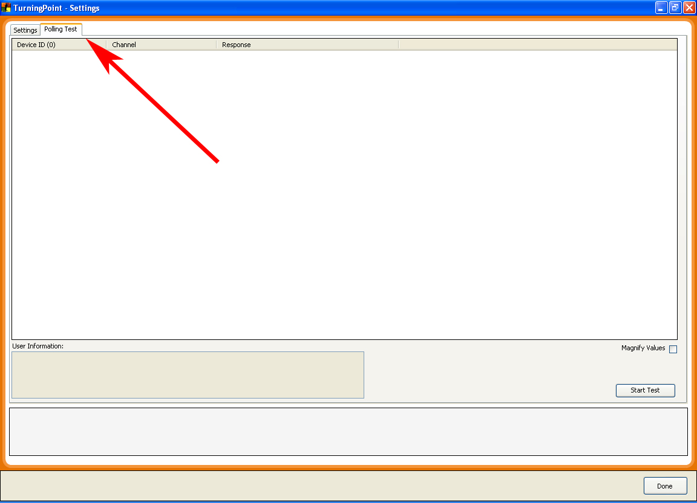
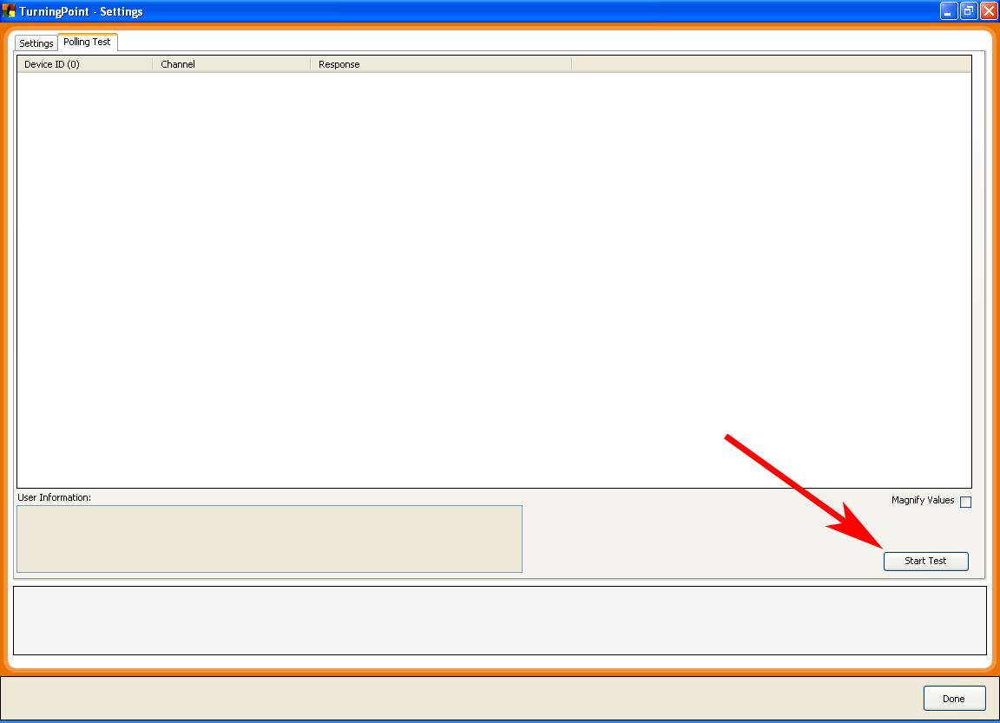
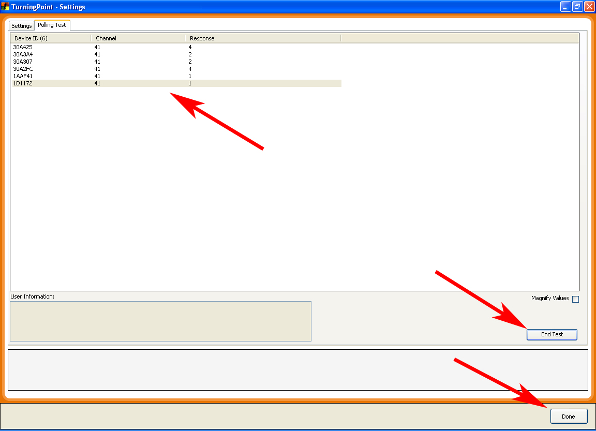

Test TurningPoint Receivers and Clickers
The TurningPoint clickers use radio signals to communicate with the TurningPoint receiver. These two devices need to be set to the same radio frequency in order for information to be transmitted properly. The default channel (frequency) for the clickers and receiver is 41. If you find that you are having difficulty getting one or more clickers to send information, follow the steps below to determine if they have been set to a channel different from your receiver. Plug the Turning Point Receiver into an open USB port. Open Turning Point and click on the Turning Point Tab. Plug the Turning Point Receiver into an open USB port. Turning Point will automatically recognize the receiver.
- From the “Turning Point 2008” tab, click on the “Tools” icon.
- Scroll down and select “Settings”.
`

- When the Turning Point Settings window opens, locate “Response Device” in the upper left hand portion of the screen and select it.

- Turning Point displays a list of Receivers that are currently connected to the computer along with the receiver’s Identification number, Firmware Version, and current RF Channel setting. WCC uses RF Channel 41 as the default RF channel, so confirm that the receiver is set to channel 41. If there is a need to change the receiver’s channel, click on the channel number to open a drop down menu of available frequencies.

NOTE: ResponseCards (clickers) must be set to the same RF channel as the receiver you are using. WCC uses RF Channel 41 as the default RF channel. If you set the receiver to an RF channel other than 41, then you must also set the ResponseCards (clickers) to transmit on that same RF channel. If you wish to do this, please see below “How to tune the Turning Point ResponseCard to the proper channel”
- To test Response Cards (clickers), click on the “Tools” drop down menu located on the Turning Point tab and select “Settings”.

- In the upper left hand portion of the “Settings” window, click on the “Polling Test” Tab.

- To begin testing of the ResponseCards, click the “Start Test” button located in the lower right hand portion of the “Polling Test” tab in the “Settings” window.

- With your set of Response Cards out, press a number on each of your clickers. Notice that as a new clicker is used the Polling Test displays its ID number.
- Continue until you have confirmed that each Clicker is sending data to the Receiver.
- Click “End Test” to end the polling
- Click “Done” to exit the “Polling Test” window.
